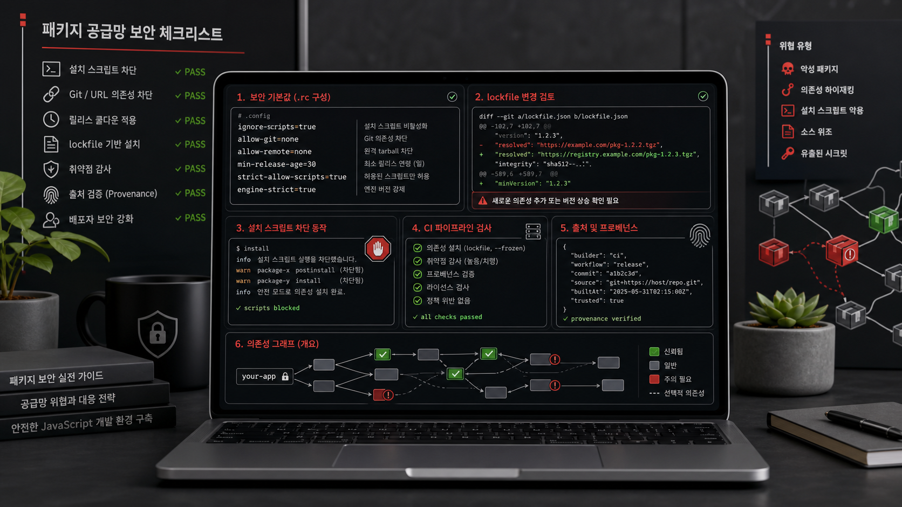

npm config set ignore-scripts true
npm config set allow-git none
npm config set min-release-age 30
npm config set audit truenpm supply chain hardening
비공식 한국어 가이드
설치 전에 막고, 배포 전에 증명한다.
패키지 설치 스크립트, Git 의존성, 신규 버전, lockfile 변조, 배포 토큰을 기본 차단 대상으로 놓고 팀의 npm 사용 방식을 안전한 기본값으로 맞추는 실전 가이드입니다.

quick config
바로 적용할 기본값
전역 설정은 개인 장비를 보호하고, 프로젝트 설정은 팀과 CI를 같은 기준으로 묶습니다. 둘 다 적용하고 예외는 코드 리뷰로 남기는 방식이 가장 단순합니다.
# pnpm-workspace.yaml
minimumReleaseAge: 43200
trustPolicy: no-downgrade
allowBuilds:
esbuild: true
sharp: false
strictDepBuilds: true
blockExoticSubdeps: truethreat model
npm 패키지 공격면
npm 보안은 취약점 스캔만으로 끝나지 않습니다. 설치 시점, 의존성 해석, lockfile, 개발자 장비, 배포 권한이 모두 공격 경로입니다.
postinstall로 토큰, SSH 키, 환경 변수를 읽을 수 있습니다.
npx와 npm exec는 검토 없는 원격 코드 실행이 됩니다.
team checklist
팀 점검표
체크 상태는 브라우저에 저장됩니다. JavaScript가 꺼져 있어도 체크박스와 문서는 그대로 사용할 수 있습니다.
ci rules
CI에서 실패시킬 규칙
CI는 개발자 장비보다 더 엄격해야 합니다. 설치는 재현 가능해야 하고, 배포는 장기 토큰 없이 짧은 OIDC 신뢰로 끝나야 합니다.
npm ci만 허용하고 lockfile 불일치는 실패 처리합니다.- 설치 스크립트는 기본 차단하고, 승인된 빌드 패키지만 별도 단계에서 실행합니다.
-
npm audit signatures는 무결성 검사로, 취약점 정책은 별도의npm audit단계로 실패 처리합니다. - 자동 업데이트는 cooldown 후 생성하고, security fix 예외는 리뷰 기록을 요구합니다.
name: publish
on:
push:
tags:
- 'v*'
permissions:
contents: read
id-token: write
jobs:
publish:
runs-on: ubuntu-latest
steps:
# 운영에서는 actions를 전체 commit SHA로 고정하세요.
# 예: actions/checkout@<full-length SHA> # v6
- uses: actions/checkout@<pin-full-sha-for-v6>
# 예: actions/setup-node@<full-length SHA> # v6
- uses: actions/setup-node@<pin-full-sha-for-v6>
with:
node-version: '24'
registry-url: 'https://registry.npmjs.org'
package-manager-cache: false
- run: npm ci --ignore-scripts
- run: npm audit --audit-level=high
- run: npm audit signatures
- run: npm test
- run: npm publishmaintainer security
유지보수자 보안
패키지를 설치하는 팀과 배포하는 팀의 책임은 다릅니다. 배포자는 계정 탈취와 권한 남용을 줄이는 운영 절차를 가져야 합니다.
계정
npm 계정에는 2FA를 켜고, 조직 권한은 역할 단위로 나눕니다. 퇴사자와 자동화 토큰은 즉시 회수합니다.
배포
가능하면 OIDC trusted publishing을 사용해 장기 publish token을 제거합니다. 공개 패키지는 provenance가 남도록 합니다.
의존성
유지보수 패키지의 dependency tree를 줄이고, dev dependency라도 릴리스 파이프라인 접근 권한을 가진 코드는 따로 봅니다.
릴리스
태그 보호, 환경 승인, stage publish 같은 사람 검토 지점을 두고 배포 로그를 보존합니다.
faq
자주 묻는 질문
ignore-scripts=true가 설치를 깨뜨리면 어떻게 하나요?
먼저 실패한 패키지가 실제로 빌드 스크립트를 필요로 하는지 확인합니다. 필요하면 패키지명, 버전, 이유를 기록하고 CI에서 별도 승인 단계로 실행하세요.
cooldown은 며칠이 적절한가요?
라이브러리와 내부 서비스는 7일 이상, 보수적인 환경은 30일을 기본값으로 두는 편이 운영하기 쉽습니다. 긴급 보안 패치는 예외 PR로 처리합니다.
npx를 완전히 금지해야 하나요?
금지보다 명시가 중요합니다. 패키지명과 버전을 고정하고, 일회성 실행 전에는 provenance, maintainer, 다운로드 급증, 설치 스크립트를 확인하세요.
사설 registry를 쓰면 안전한가요?
사설 registry는 통제 지점을 주지만 자동으로 안전해지지는 않습니다. scope 매핑, registry host 검증, dependency confusion 방어, read-only token 정책이 같이 필요합니다.